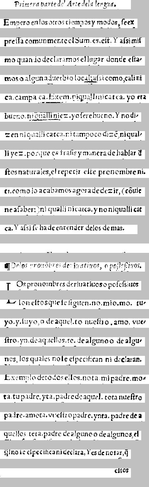

   Priores Parte del e|tre de la lengua.  
    Primera parte del Arte de la lengua.

  Empero en los otros tiempos y modos, |e ex 
Empero en los otros tiempos y modos, |e ex

 pre||a comunmente el buen es, e|t\'a Y a|al mi|-
pre||a comunmente el Sum. es. e|t. Y a|si mi|

  mo quando declaramos el lugar donde e|ta- 
mo quando declaramos el lugar donde e|ta-

 mos o alguna fuerbio locabulare omozcaliti-
mos o algun aduerbio local: a|si como, cali ni

 ca campa ca toztemicti qualli in catca, yo era 
ca. campa ca. Exem. niquallinicatca. yo era

 bueno tlaqualli. Ejez, yo |er\'e bueno. Y no di- 
bueno. ni qualli niez. yo |ere bueno. Y no di-

 z en ni qualli catca, ni tampoco dizo in iqual- 
zen ni qualli catca. ni tampoco diz\~e, ni qual-

 li yez, porque es fra|is y manera de hablar el 
li yez. porque es fra|is y manera de hablar d

 Itos naturales, el repetir e|te pronombre ni- 
|tos naturales, el repetir e|te pronombre ni.

 ti, como lo acabamos agora de dezitz\ii-tome 
ti. como lo acabamos agora de dezir, (c\~ouie

 ne a |aber: ni qualli nicatca . yn oniqualli cat-
ne a |aber:) ni qualli nicatca. y no niqualli cat

 ca. Y a\'un |e ha de entender de los dem\'as.  
ca. Y a|si |e ha de entender de los demas.

               


 II. De los ruficiere de la frutos, \'o po||ellizcos. 
¶De los pron\~obres deriuatiuos, o po||e|siuos.

 -¡? Ds pronombres derruatiuos o po|e|iones 
Los pronombres deriuatiuos o po|e|siuos

  F- |on \'e|tos que |e |iguen, no mio, mor tu- 
|on e|tos que |e |iguen. no. mio. mo. tu-

 yo, y, |uyo, o de aqu\'el.to nue|tro, \`amo vue- 
yo. y. |uyo, o de aquel. to nue|tro. amo. vue-

 |tro . yn de aquellos tres de alguno o de algu- 
|tro. yn. de aquellos. te. de alguno o de algu-

 nos, los quales no le e|pecifican ni declaran, 
nos, los quales no |e e|pecifican ni declaran.

 Exemplo de todos ellos, nota mi padre mo- 
Exemplo de todos ellos. nota. mi padre mo-

 ta tu padre, y ca, padre de aquel cota nue|tro 
ta. tu padre. yta. padre de aquel. toga nue|tro

 padre amotin vue|tro padre. ynta . padre de \`a 
padre. amota. vue|tro padre. ynta. padre de a

 quallo, teta-padre de alguno o de algunos el 
quellos. teta. padre de alguno o de algunos, el

 Ill'391691-169954916661444. Y es de notat, |i 
\~qlno |e e|pecifican ni declara, y es de notar, \~q

           9196 
                    e|tos


===============================================


   [spanish Priores Parte del e|tre de la lengua.  
  Empero en los otros tiempos y modos, |e ][latin ex 
 pre||a ][spanish comunmente el buen es, e|t\'a Y a|al mi|-
  mo quando declaramos el lugar donde e|ta- 
 mos o alguna fuerbio ][latin locabulare ][nahuatl omozcaliti-
 ca campa ca toztemicti qualli in catca, ][spanish yo era 
 bueno ][nahuatl tlaqualli. ][spanish Ejez, yo |er\'e bueno. Y no di- 
][null  [spanish z en ni ][nahuatl qualli catca, ][spanish ni tampoco dizo ][nahuatl in iqual- 
 li yez, ][spanish porque es fra|is y manera de hablar el 
 Itos naturales, el repetir e|te pronombre ][latin ni- 
 ti, ][spanish como lo acabamos agora de ][nahuatl dezitz\ii-tome 
 ne ][spanish a |aber: ni ][nahuatl qualli nicatca . yn oniqualli cat-
 ca. ][spanish Y a\'un |e ha de entender de los dem\'as.  
               
][null  [spanish II. De los ruficiere de la frutos, \'o po||ellizcos. 
 -¡? Ds pronombres derruatiuos o po|e|iones 
  F- |on \'e|tos que |e |iguen, no mio, mor tu- 
 yo, y, |uyo, o de aqu\'el.to nue|tro, ][nahuatl \`amo ][spanish vue- 
 |tro ][nahuatl . yn ][spanish de aquellos tres de alguno o de algu- 
 nos, los quales no le e|pecifican ni declaran, 
 ][latin Exemplo ][spanish de todos ellos, nota mi padre mo- 
][null  [spanish ta tu padre, y ca, padre de aquel cota nue|tro 
 padre amotin vue|tro padre. ][nahuatl ynta . padre de \`a 
 quallo, teta-padre de ][spanish alguno o de algunos el 
 Ill'391691-169954916661444. Y es de ][latin notat, |i 
           9196 


<table><tr><td>
<font face="courier"> 
</br></br></br></br></br>
</br></br>

   <font color="Red">Priores Parte del e|tre de la lengua.  </br>
  Empero en los otros tiempos y modos, |e </font><font color="Blue">ex </br>
 pre||a </font><font color="Red">comunmente el buen es, e|t\'a Y a|al mi|-</br>
  mo quando declaramos el lugar donde e|ta- </br>
 mos o alguna fuerbio </font><font color="Blue">locabulare </font><font color="Olive">omozcaliti-</br>
 ca campa ca toztemicti qualli in catca, </font><font color="Red">yo era </br>
 bueno </font><font color="Olive">tlaqualli. </font><font color="Red">Ejez, yo |er\'e bueno. Y no di- </br>
</font><font color="Black"> <font color="Red">z en ni </font><font color="Olive">qualli catca, </font><font color="Red">ni tampoco dizo </font><font color="Olive">in iqual- </br>
 li yez, </font><font color="Red">porque es fra|is y manera de hablar el </br>
 Itos naturales, el repetir e|te pronombre </font><font color="Blue">ni- </br>
 ti, </font><font color="Red">como lo acabamos agora de </font><font color="Olive">dezitz\ii-tome </br>
 ne </font><font color="Red">a |aber: ni </font><font color="Olive">qualli nicatca . yn oniqualli cat-</br>
 ca. </font><font color="Red">Y a\'un |e ha de entender de los dem\'as.  </br>
               </br>
</font><font color="Black"> <font color="Red">II. De los ruficiere de la frutos, \'o po||ellizcos. </br>
 -¡? Ds pronombres derruatiuos o po|e|iones </br>
  F- |on \'e|tos que |e |iguen, no mio, mor tu- </br>
 yo, y, |uyo, o de aqu\'el.to nue|tro, </font><font color="Olive">\`amo </font><font color="Red">vue- </br>
 |tro </font><font color="Olive">. yn </font><font color="Red">de aquellos tres de alguno o de algu- </br>
 nos, los quales no le e|pecifican ni declaran, </br>
 </font><font color="Blue">Exemplo </font><font color="Red">de todos ellos, nota mi padre mo- </br>
</font><font color="Black"> <font color="Red">ta tu padre, y ca, padre de aquel cota nue|tro </br>
 padre amotin vue|tro padre. </font><font color="Olive">ynta . padre de \`a </br>
 quallo, teta-padre de </font><font color="Red">alguno o de algunos el </br>
 Ill'391691-169954916661444. Y es de </font><font color="Blue">notat, |i </br>
           9196 </br>
</font></font><br/><br/><br/>
<font color="Black">null</font></br>
<font color="Red">spanish</font></br>
<font color="Blue">latin</font></br>
<font color="Olive">nahuatl</font></br>
</td><td>
</td></tr></table>


CER: 0.19618528610354224
CER, allow f->s: 0.19618528610354224
WER, keep punc: 0.5024390243902439
WER, keep punc, allow f->s: 0.5024390243902439
WER, remove punc: 0.3463414634146341
WER, remove punc, allow f->s: 0.3463414634146341
